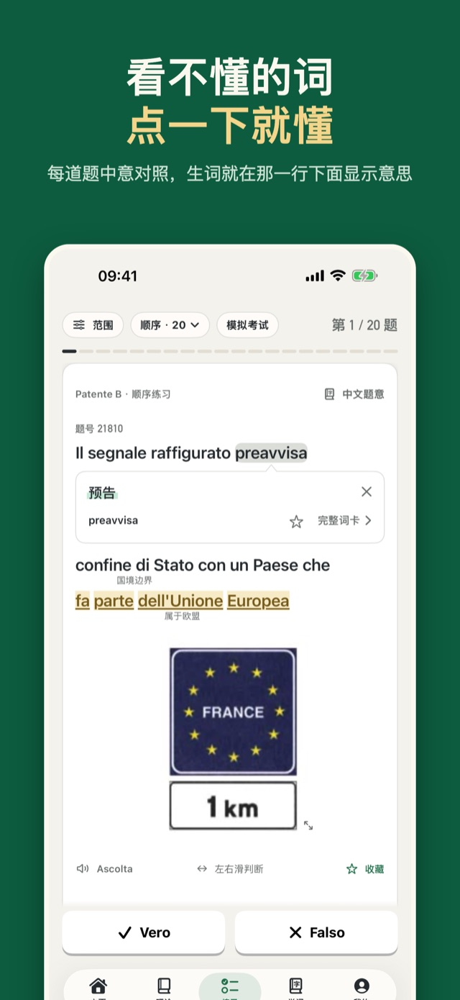
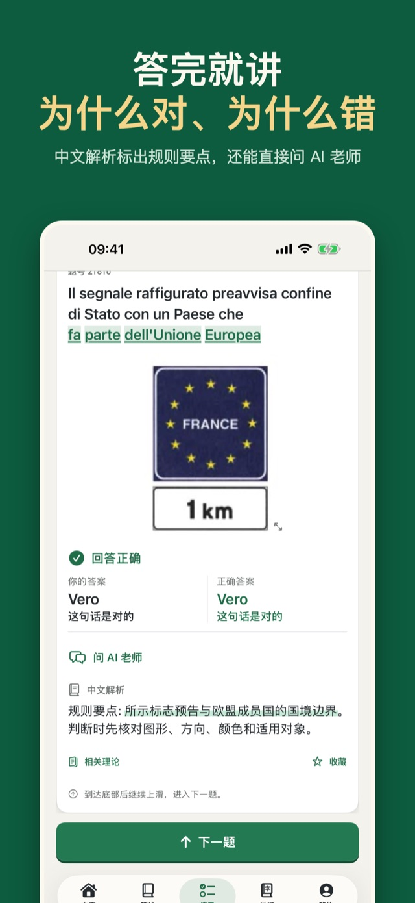
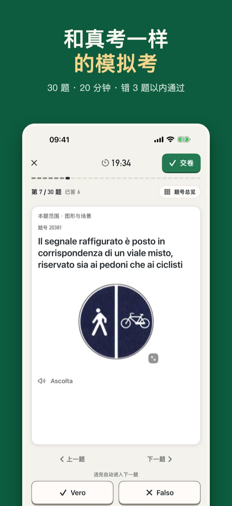
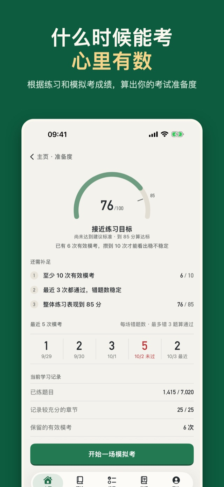
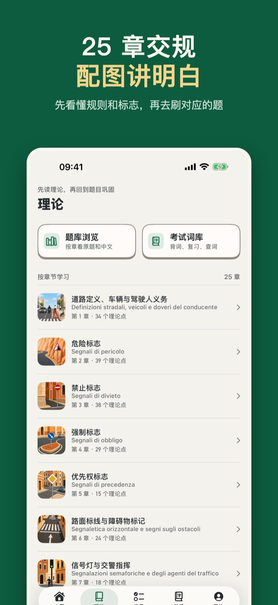
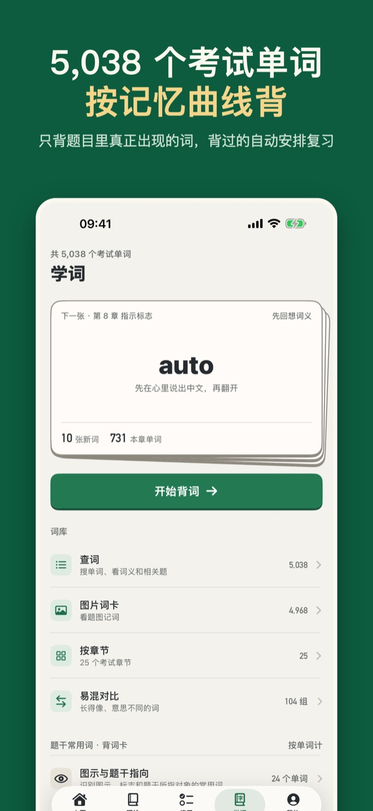

为什么好用
理论考试只有意大利语，题目又多又绕。这个 App 把它拆开，一道一道带你吃透。
中意对照，点词就懂
每道题都有中文翻译。生词点一下，意思就显示在那一行下面，不用切出去查词典。
按真考格式模拟考
30 道判断题，20 分钟，错 3 道以内通过。交卷后逐题看解析，知道自己错在哪。
知道什么时候能考
根据你的练习和模拟考成绩，算出考试准备度，告诉你离稳过还差多少。
错题和单词自动复习
答错的题会再出现，5,038 个考试单词按记忆曲线安排复习，每天打开就知道练什么。
25 章理论讲解
配图的理论卡片和讲解视频，先看懂规则和标志，再去刷对应的题。
不注册也能用
所有练习都可以直接开始，记录保存在手机上。想换手机或多设备同步时再登录。
看看界面






题库依据意大利交通部（Ministero delle Infrastrutture e dei Trasporti）公开发布的 B 类理论题清单，已按 2026 年 9 月的新清单更新。本 App 不是官方应用，与交通部、Motorizzazione 及任何驾校均无隶属关系。
Quiz patente B con traduzione in cinese, aiuto parola per parola e simulazione d'esame. App non ufficiale.